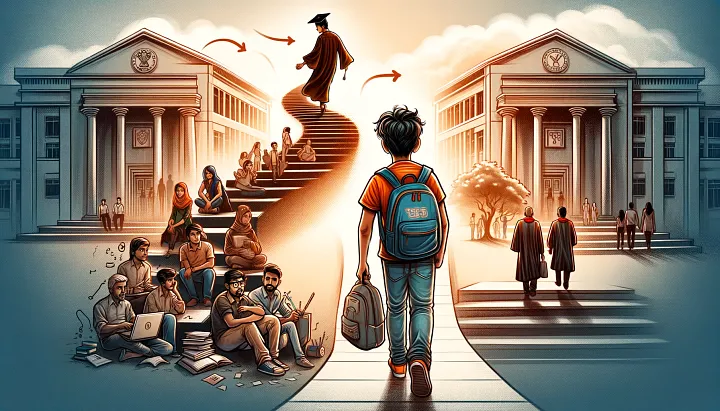

College life is a journey of growth,
Learning lessons, chasing dreams, and finding hope.
Through the highs, the lows, the laughter, and the tears,
It’s all part of the adventure we hold dear.

How to Survive my First Week of College
Posted on 1st September, 2020
Starting college was one of the most exciting and overwhelming experiences of my life. I didn’t know what to expect, but I learned a lot in that first week. Here are some tips that helped me not just survive, but thrive during my first week:
1. Get Organized
One of the first things I did was get organized. I spent some time figuring out where my classes were and how much time I needed to get from one class to the next. I kept a campus map with me at all times and used my phone to track my schedule. I also made sure to note any orientation events so I wouldn’t miss out on them.
2. Don’t Skip Orientation
I thought I could skip orientation and just figure everything out on my own, but I’m so glad I didn’t! Orientation was a great way to get familiar with the campus, meet other freshmen, and learn about resources. I met a few people who are still my close friends today. Trust me, you don’t want to miss it!
3. Make New Connections
One of the biggest challenges for me was meeting new people. But I quickly learned that most people were just as eager to make friends as I was. I made sure to introduce myself to people in my classes, joined a few study groups, and even reached out to my roommates. It’s all about putting yourself out there.
4. Attend my Classes
I was nervous about missing my first classes because I wasn’t sure how everything worked, but I quickly realized that attending class on time was key. Not only did it help me stay on top of my assignments, but it also gave me a chance to meet my professors and classmates. It also showed that I was serious about my studies.
5. Take Care of myself
In all the excitement, I almost forgot to take care of myself. I had to remind myself to eat well, get enough sleep, and take breaks. College life can be overwhelming, but taking care of my health helped me stay energized and focused.
Balancing Studies and Social Life
Posted on 1st January, 2021
Balancing studies and social life was one of the hardest things for me to figure out in college. I found myself torn between wanting to go out with friends and needing to stay on top of my assignments. Here’s how I’ve learned to manage both:
1. Create a Study Schedule
The first thing that helped me was creating a study schedule. I planned out when I would study and made sure I stuck to it. I treated study time like an appointment—something I couldn’t skip. Having a planner or calendar on my phone made it easy to stay on track.
2. Prioritize my Tasks
Not every assignment is equally urgent, so I learned to prioritize. Some days I’d focus on bigger projects that were due soon, while on others, I’d work on smaller tasks. I always made sure to get the most important things done first, and it really helped me stay on top of my work without feeling overwhelmed.
3. Learn to Say No
This was something I really struggled with. I didn’t want to miss out on social events, but sometimes I had to say no to plans so I could finish my homework. It felt tough at first, but I realized that my friends understood, and I would have more fun when I wasn’t stressed about unfinished assignments.
4. Use my Time Wisely
I learned that I could use any free time between classes or in the evenings to get some studying done. I didn’t always need to be at the library. Even just 30 minutes of focused studying could help me stay ahead. And if I felt tired, I’d take a short break to recharge.
5. Take Breaks
One thing that really helped me was taking breaks while studying. I tried the Pomodoro Technique (25 minutes of studying, then a 5-minute break), and it made a huge difference in my focus. During breaks, I’d stretch, grab a snack, or chat with friends. It kept me refreshed and productive.
6. Be Present in Both Worlds
I’ve learned to be present in whatever I’m doing. When I’m studying, I focus solely on my work. When I’m hanging out with friends, I try to give them my full attention. Being in the moment helps me get more out of both my studies and my social life.
Studying from my aunt's house
Posted on 10th January, 2021
She provided me with a peaceful and supportive environment,allowing me to focus deeply on my education. It became a place where I could nurture both my knowledge and personal growthI decided to spend some time studying at my aunt’s house, and it turned out to be one of the best decisions I’ve made. It’s a quieter place than my dorm, and I was able to get more focused study time in. Here’s how I made the most of studying from my aunt’s house:
1. Create a Study Space
Even though I wasn’t in my usual study spot, I made sure to create a dedicated space at my aunt’s house. I found a quiet corner with a desk, set up my books and laptop, and got to work. Having a specific space to study really helped me focus and feel more productive.
2. Limit Distractions
At first, it was tempting to relax and watch TV, especially since my aunt had a cozy living room. But I quickly learned to limit distractions. I turned off my phone, kept the TV off, and focused entirely on my studies. If I needed background noise, I played some soft instrumental music instead.
3. Set a Study Routine
I decided to set a routine while studying at my aunt’s house. I planned out study hours and stuck to them, just like I would on campus. The routine helped me stay on track, and I found it easier to stay productive without feeling like I was wasting time.
4. Use my Time Efficiently
When I was at my aunt’s house, I made sure to make the most of my time. I’d set specific tasks for the day, whether it was working on assignments or reviewing notes. The quiet environment made it easier to dive deep into my studies without feeling rushed.
5. Be Flexible
Studying at my aunt’s house was different from my usual routine, and sometimes things didn’t go as planned. Maybe I got distracted by a family conversation, or I had to adjust my study space. I learned to be flexible and just go with the flow. If something didn’t work out, I’d adapt and find another solution.
Making the Most of Campus Events
Posted on May 15, 2024
College life is more than just classes and assignments—it’s about creating memories and getting involved in the community. One of the best ways to do that is by attending campus events. Here’s how I’ve learned to make the most of them:
1. Attend Orientation Events
When I first got to college, I wasn’t sure if I wanted to go to all the orientation events, but I’m so glad I did! These events were a great way to meet new people, learn about the campus, and even get some free food! They really helped me get settled in and made my first few weeks a lot less overwhelming.
2. Join Campus Organizations
I knew I wanted to get involved, so I joined a couple of campus organizations. I joined a club related to my major and a social club for fun. It was a great way to meet new people, get involved in the community, and have something to look forward to outside of class.
3. Attend Campus Speaker Events and Workshops
My school often brings in speakers for different events, and I’ve found them to be super interesting and informative. Whether it’s a career-related seminar or a guest speaker discussing a topic I’m passionate about, these events are a great way to learn new things and get inspired.
4. Support Sports and Arts Events
I also try to attend sports games and theater productions on campus. Supporting the teams and watching my friends perform gives me a chance to have fun and take a break from studying. It’s a great way to feel more connected to the college community.
5. Network at Career Fairs
Even if I’m not actively looking for a job, I try to attend career fairs. It’s a great opportunity to meet potential employers and learn about different industries. Networking at these events has been a great way to prepare for my future career while still being a student.
6. Volunteer and Give Back
Volunteering is one of the best ways to get involved and make a difference. My school organizes a lot of volunteer events, and I’ve found it’s a great way to meet people, help others, and feel good about giving back to the community.
5 Reflections on My College Farewell
Posted on December 15, 2021
As the end of my college journey approaches, it’s hard to believe how quickly time has flown. The thought of leaving behind familiar faces, classrooms, and the freedom that college life provides is a bit overwhelming. But before I pack up my things and head into the next chapter of life, here are five thoughts I want to share about my college farewell:
1. Cherishing the Memories
My college years have been filled with memories that I’ll carry with me forever. From the late-night study sessions to the spontaneous trips with friends, it’s these little moments that make up the bigger picture of my college experience. It’s incredible how certain places and people have become a part of who I am. Leaving this behind is bittersweet, but I know I’ll always have these memories to look back on.
2. Thanking the People Who Shaped My Journey
I’ve met so many incredible people throughout my time here—professors who pushed me to think differently, friends who’ve been my support system, and even strangers who’ve become lasting connections. As I prepare for my farewell, I’m filled with gratitude for everyone who’s been a part of my journey. These relationships have been my greatest lessons, and I’m thankful for every conversation and shared experience.
3. Reflecting on the Growth
College has been a space of personal growth—both academically and emotionally. I came in with big dreams and uncertainties, but over time, I’ve learned to trust myself and my abilities. I’ve faced challenges that I never thought I could overcome, and yet, here I am, stronger and more confident. As I say goodbye to campus life, I realize how much I’ve changed—and I’m proud of the person I’ve become.
4. Embracing the Next Chapter
Leaving college feels like standing at the edge of a vast, unknown future. It’s a little scary, but it’s also exhilarating. While I’ll miss the comfort of familiar routines, I’m excited about the opportunities that lie ahead. Whether it’s further studies, career pursuits, or personal growth, I know the next chapter will be just as exciting and challenging as college has been.
5. Celebrating the Journey, Not Just the Destination
At the end of the day, it’s not just about getting that diploma—it’s about everything I’ve learned along the way. The late-night discussions, the group projects, the failures, and the triumphs—they’ve all shaped my college experience. Saying farewell doesn’t mean the journey ends; it’s simply a transition into something new. I’ll carry these lessons with me wherever I go.
As I get ready to say goodbye to college, I realize that this isn’t just the end of a chapter, but the beginning of a new adventure. No matter where life takes me, I’ll always carry a piece of college with me, and I’ll be forever grateful for everything it has taught me.
.jpg)
.jpeg)
.jpg)
.jpg)
.jpg)
.jpg)